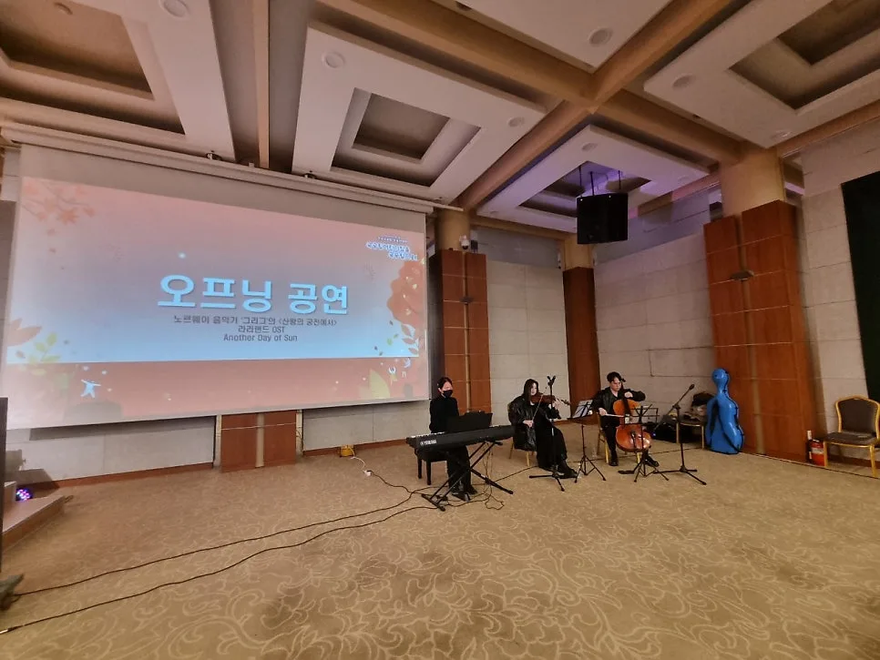

의정부 행사 준비 · 2026년 10월 28일
의정부 송년회 MC · 레크리에이션 : 순서표와 경품 진행 준비
의정부 송년회 MC를 정할 때 가장 먼저 해야 할 일은 식사 시간 사이사이에 무대를 어떻게 끼워 넣을지 정하는 것입니다. 송년회는 먹고 이야기하는 자리라서 순서가 너무 빽빽하면 아무도 무대를 보지 않고, 너무 비어 있으면 자리가 흩어집니다.
그래서 순서표 짜는 법, MC에게 맡길 범위, 경품 진행, 연회장 점검 항목을 차례로 정리했습니다.

- 송년회는 식사 흐름을 기준으로 무대 순서를 넣고 빼는 것이 핵심입니다.
- 인사 · 시상처럼 모두가 들어야 하는 순서는 식사 전에, 게임 · 경품은 식사가 어느 정도 끝난 뒤에 두면 집중이 잘 됩니다.
- 경품 추첨은 한 번에 몰지 않고 나눠서 하면 끝까지 자리를 지키기 쉽습니다.
- 연회장은 소리가 울리기 쉬우므로 기본 음향과 영상 설비를 먼저 확인하고 모자란 것만 보강합니다.

1. 의정부 송년회에서 MC가 해결해 주는 문제
송년회 담당자가 가장 자주 부딪히는 문제는 두 가지입니다. 식사하는 동안 무대가 겉돌거나, 순서가 길어져 식사가 식어 버리는 것입니다.
MC는 이 두 가지 사이에서 속도를 조절하는 사람입니다. 그래서 MC를 구하기 전에 무엇을 맡길지부터 정해 두면 상담이 훨씬 빨라집니다.
| 맡길 범위 | 내용 | 이런 송년회에 |
|---|---|---|
| 사회만 | 인사 · 시상 · 건배 순서 진행 | 임원 중심 · 짧은 송년회 |
| 사회 + 레크리에이션 | 식사 뒤 게임 · 경품 추첨 | 부서가 섞인 회사 송년회 |
| 사회 + 레크 + 공연 | 가수 · 댄스팀 섭외까지 | 협회 · 동문회 큰 송년회 |
| 전체 기획 | 순서표 · 음향 · 무대 · 영상까지 | 처음 송년회를 맡은 담당자 |
범위를 정하기 어렵다면 "사회만"에서 시작해 필요한 순서를 하나씩 더하는 방법도 있습니다. 상담 때 참석자 구성과 식사 방식을 알려 주시면 범위를 함께 좁힙니다.
2. 송년회 순서표 : 식사와 무대를 엮는 법
참가자가 가장 집중하는 때는 식사가 본격적으로 시작되기 전입니다. 대표 인사나 시상처럼 모두가 들어야 하는 순서는 식사 전 구간에 모아 둡니다.
식사가 시작되면 무대는 잠시 쉬고, 잔잔한 음악이나 한 해를 돌아보는 짧은 영상으로 시간을 채웁니다. 식사가 어느 정도 끝나면 레크리에이션과 경품으로 분위기를 다시 올립니다.
| 구간 | 순서 | 메모 |
|---|---|---|
| 입장 | 음악 · 자리 안내 | 좌석표는 입구에 |
| 개회 | MC 오프닝 · 대표 인사 | 인사는 짧게 부탁드리기 |
| 시상 | 올해의 상 · 공로 시상 | 수상자 명단 · 호명 순서 확정 |
| 식사 | 건배 · 식사 · 영상 | 무대는 쉬어 가는 시간 |
| 2부 | 레크리에이션 · 팀 게임 | 자리에서 함께하는 게임부터 |
| 경품 | 추첨을 나누어 진행 | 큰 경품은 마지막에 |
| 마무리 | 단체 사진 · 폐회 | 귀가 안내 |

표는 기본 틀일 뿐이라 식사 방식이 코스인지 뷔페인지에 따라 바뀝니다. 시상이 없는 송년회라면 개회 뒤에 곧바로 식사로 넘어가도 됩니다.
3. 레크리에이션과 경품은 앉은 자리에서 시작합니다
식사 뒤 레크리에이션은 테이블에 앉은 채로 할 수 있는 게임으로 시작하는 것이 자연스럽습니다. 분위기가 오르면 각 테이블 대표가 무대로 나오는 게임으로 넘어갑니다.
억지로 무대에 끌어올리거나 참가자를 깎아내리는 농담을 하지 않는 것이 힐링엔터테인먼트의 진행 원칙입니다. 처음 보는 사람이 섞여 있어도 부담 없이 참여할 수 있어야 하기 때문입니다.
- 테이블 대항 퀴즈: 한 해 회사 일이나 협회 소식을 문제로 내면 이야기가 자연스럽게 오갑니다.
- 팀 미션 게임: 테이블별로 대표가 나와 짧게 겨룹니다.
- 경품 추첨: 2부 중간중간 나누어 진행하면 끝까지 기대감이 이어집니다.
- 마무리: 다 같이 일어서는 순서로 끝내면 단체 사진으로 바로 이어집니다.
경품 추첨을 한 번에 몰아서 하면 추첨이 끝나는 순간 자리가 비기 쉽습니다. 작은 경품은 앞쪽에, 큰 경품은 마지막에 두는 식으로 나누면 마무리까지 남아 있는 분이 많습니다.
4. 연회장 음향 · 영상 점검표
연회장은 벽이 단단하고 공간이 넓게 터져 있어 소리가 울리거나 흩어지기 쉽습니다. 먼저 연회장에 기본 음향과 영상 송출 설비가 있는지 확인하고, 모자란 것만 따로 준비하는 순서가 효율적입니다.
| 확인할 것 | 내용 |
|---|---|
| 마이크 | MC용 · 인사용 · 시상용이 각각 몇 개 필요한지 |
| 스피커 | 연회장 기본 설비로 충분한지 |
| 영상 | 스크린 · 프로젝터 · 노트북 연결 방식 |
| 무대 조명 | 시상 · 공연 때 무대를 밝힐지 |
| 리허설 | 연회장 입장 가능 시각 |

연회장마다 쓸 수 있는 설비와 반입 규정이 다르므로 장비 사용 범위는 연회장 담당자에게 먼저 확인합니다. 그 결과를 알려 주시면 보강할 항목을 정리합니다.
5. 현장 확인과 리허설 일정 잡기
의정부(경기도 의정부시)는 경기도지만 노원과 맞닿아 있습니다. 힐링엔터테인먼트는 노원 본사에서 의정부시청까지 차로 약 15분 · 12.7km(막히지 않을 때) 거리라 리허설이나 음향 점검을 위해 미리 들르기에 부담이 적습니다.
다만 연말 저녁은 길이 막히기 쉬워 행사 당일에는 일찍 출발합니다. 연회장 입장이 가능한 시각을 미리 받아 두면 리허설 시간을 현실적으로 잡을 수 있습니다.
- 연회장 입장 가능 시각과 퇴장 시각을 확인합니다.
- 시상 명단과 호명 순서를 MC에게 미리 전달합니다.
- 한 해 사진이나 영상 파일을 미리 보내 재생 확인을 합니다.
- 경품 목록과 추첨 방식을 정해 순서표에 적어 둡니다.
시상 명단을 정리하는 방법은 송년회 시상식 명단 정리 글에 따로 정리했습니다.
6. 견적 문의 항목
자동 견적서에서 아래 항목을 골라 날짜 · 연회장 · 인원과 함께 보내 주시면 확인 후 견적을 안내드립니다. 금액은 행사마다 달라 견적서에 나오지 않습니다.
| 항목 | 내용 |
|---|---|
| 송년회 · 신년회 · 기념식 | 기획 · 순서 구성 |
| 대표 MC 이현호 진행 | 사회 · 레크리에이션 |
| 경품 · 시상 진행 | 추첨 · 시상식 운영 |
| 가수 섭외 | 축하 공연 |
| 음향 (소형) | 연회장 보강 |
| 무대 조명 | 시상 · 공연 |
| LED · 스크린 | 영상 송출 |
의정부 지역 안내는 의정부 행사 안내에 있습니다. MC를 고르는 기준은 성북 행사 MC 섭외 글에 정리했습니다.
문의는 견적 문의로 남겨 주세요. 행사 중에는 통화가 어려우니 날짜 · 장소 · 인원을 문자나 카톡으로 남겨 주시면 확인 후 연락드립니다.
자주 묻는 질문
송년회는 언제쯤 연락해야 하나요?
연말은 송년회가 몰리는 때라 날짜와 장소가 정해지는 대로 먼저 연락 주시는 편이 좋습니다. 행사 중엔 통화가 어려우니 문자 · 카톡으로 날짜 · 장소 · 인원을 남겨 주세요.
식당 송년회에서도 레크리에이션이 되나요?
테이블에 앉은 채로 하는 게임 위주로 짜면 됩니다. 마이크와 스피커를 쓸 수 있는 공간인지 먼저 확인해 주세요.
경품은 업체에서 준비하나요?
경품은 주최 측이 준비하시고, 추첨 · 시상 진행을 맡습니다. 추첨 방식은 미리 함께 정합니다.
송년회 영상은 누가 만드나요?
한 해 사진 영상은 회사에서 준비하시는 경우가 많습니다. 파일을 미리 보내 주시면 순서표의 어느 자리에 틀지 정하고, 음향 · 화면 연결을 리허설 때 확인합니다.
행사 날짜가 정해지셨나요?
날짜 · 지역 · 인원 · 행사 종류만 알려 주시면 행사에 맞춰 상담 · 견적을 안내드립니다. 행사 중엔 통화가 어려우니 문자 · 카톡을 남겨 주세요.